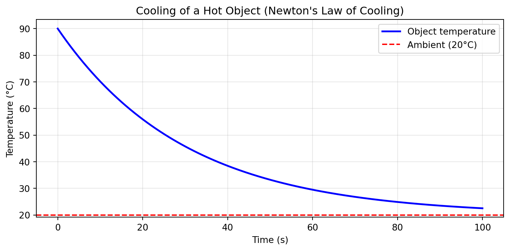

This is not a traditional textbook. It’s designed to be read with your hands on a keyboard, running and modifying code as you go.
1.1 Why Python?
Heat transfer involves equations, correlations, and property lookups that are tedious by hand but trivial with code. A single function call can evaluate the Dittus-Boelter correlation across a range of Reynolds numbers. A few lines of code can solve a transient conduction problem that would take pages of analytical work.
But computation isn’t just about convenience. It’s about building intuition.
When you can ask “what if I doubled the flow rate?” and see the answer in seconds, you start to develop a feel for how these systems behave. When you can plot temperature profiles and watch them evolve, abstract equations become concrete. This kind of exploration builds understanding that static examples cannot.
Every chapter contains Python code. Some examples are interactive: you can edit the code directly in your browser and click “Run” to see the results. Others produce plots and visualisations. All of them are meant to be modified, broken, and fixed.
TipThe Learning Loop
Read the theory
Run the code
Change something
Predict what will happen
Check your prediction
Repeat
This loop—predict, test, refine—is how engineers develop intuition.
1.2 Running the Code
You have several options for running Python code in this book:
1.2.1 Option 1: Just Use Your Browser (Easiest)
Many code examples in this book are interactive. They run directly in your browser using Pyodide, a Python interpreter compiled to WebAssembly. No installation required.
Look for the “Run Code” button beneath code blocks. You can edit the code, change parameters, and re-run to see different results.
NoteBrowser-Based Limitations
Interactive browser code works well for calculations and simple outputs. For complex matplotlib plots or computationally intensive simulations, you’ll want a local Python installation.
1.2.2 Option 2: Anaconda (Recommended for Beginners)
Open “Jupyter Notebook” from the Anaconda Navigator
Anaconda includes Python plus NumPy, SciPy, Matplotlib, and hundreds of other packages pre-installed.
1.2.3 Option 3: pip (If You Already Have Python)
If you have Python 3.8+ installed:
pip install numpy scipy matplotlib
1.2.4 Option 4: Google Colab (Cloud-Based)
Google Colab provides free Jupyter notebooks in the cloud. Copy code blocks into a Colab notebook to run them. This requires a Google account but no local installation.
1.3 Testing Your Setup
If you’re running Python locally, verify your installation with this code:
import numpy as npimport matplotlib.pyplot as plt# Exponential cooling: Newton's law of coolingt = np.linspace(0, 100, 200) # time in secondsT_initial =90# initial temperature, °CT_ambient =20# ambient temperature, °Ctau =30# time constant, secondsT = T_ambient + (T_initial - T_ambient) * np.exp(-t / tau)plt.figure(figsize=(8, 4))plt.plot(t, T, 'b-', linewidth=2, label='Object temperature')plt.axhline(y=T_ambient, color='r', linestyle='--', label=f'Ambient ({T_ambient}°C)')plt.xlabel('Time (s)')plt.ylabel('Temperature (°C)')plt.title('Cooling of a Hot Object (Newton\'s Law of Cooling)')plt.legend()plt.grid(True, alpha=0.3)plt.tight_layout()plt.show()print("Setup complete. You're ready to begin.")

Setup complete. You're ready to begin.
If you see an exponential decay curve approaching the ambient temperature, your environment is working.
NoteWhat This Plot Shows
This is Newton’s law of cooling in action: the rate of heat loss is proportional to the temperature difference between the object and its surroundings. The object cools quickly at first (large temperature difference) and more slowly as it approaches ambient temperature. The time constant\(\tau\) determines how fast this happens. We’ll derive this equation properly in the chapter on transient conduction.
Governing equations with derivations and symbol tables
Python Exploration
Interactive code to build understanding
Worked Examples
Step-by-step problem solving
Summary
Key takeaways and equations in boxes
Exercises
Conceptual, quantitative, and computational problems
Further Viewing
Optional video resources (also linked inline)
Do not skip the code sections. The act of running code—and tweaking parameters to see what happens—cements understanding in a way that passive reading cannot.
1.5 Conventions
1.5.1 Units
We use SI units throughout:
Quantity
Symbol
SI Unit
Temperature
\(T\)
K (Kelvin)
Temperature difference
\(\Delta T\)
K or °C (equivalent for differences)
Heat transfer rate
\(\dot{Q}\)
W (watts)
Heat flux
\(q''\)
W/m²
Thermal conductivity
\(k\)
W/(m·K)
Convective coefficient
\(h\)
W/(m²·K)
Temperatures are in Kelvin unless otherwise noted. For temperature differences, Kelvin and Celsius are interchangeable (a 10 K difference equals a 10°C difference). For absolute temperatures, particularly in radiation calculations involving \(T^4\), you must use Kelvin.
WarningUnit Errors
Many errors in heat transfer come from unit confusion, not conceptual misunderstanding. Every chapter includes dimensional analysis examples. Develop the habit of checking units at every step.
1.5.2 Notation
Symbol
Meaning
\(\dot{Q}\)
Heat transfer rate (W)
\(q'\)
Heat transfer per unit length (W/m)
\(q''\)
Heat flux (W/m²)
\(\dot{q}\)
Volumetric heat generation (W/m³)
The prime notation follows a pattern: each prime adds a length dimension to the denominator.
1.5.3 Equations
Key equations appear in boxes at the end of each chapter. When an equation is first introduced, it includes a symbol table defining every variable with units.
1.6 Prerequisites
This book assumes you have completed:
Thermodynamics: First and second laws, energy balances, properties of pure substances
Basic Python: Variables, functions, loops, NumPy arrays (or willingness to learn as you go)
Partial differential equations appear in conduction chapters, but we focus on solutions and physical interpretation rather than mathematical derivation. If you haven’t taken a PDE course, you’ll still be able to follow along.
1.7 Acknowledgements
This book grew out of lecture materials developed for Thermofluids 3 at the University of Edinburgh. The explanations reflect years of student questions, tutorial discussions, and feedback that shaped how I teach this material.
---title: "How to Use This Book"---This is not a traditional textbook. It's designed to be read *with your hands on a keyboard*, running and modifying code as you go.## Why Python?Heat transfer involves equations, correlations, and property lookups that are tedious by hand but trivial with code. A single function call can evaluate the Dittus-Boelter correlation across a range of Reynolds numbers. A few lines of code can solve a transient conduction problem that would take pages of analytical work.But computation isn't just about convenience. It's about **building intuition**.When you can ask "what if I doubled the flow rate?" and see the answer in seconds, you start to develop a feel for how these systems behave. When you can plot temperature profiles and watch them evolve, abstract equations become concrete. This kind of exploration builds understanding that static examples cannot.Every chapter contains Python code. Some examples are **interactive**: you can edit the code directly in your browser and click "Run" to see the results. Others produce plots and visualisations. All of them are meant to be modified, broken, and fixed.::: {.callout-tip}## The Learning Loop1. Read the theory2. Run the code3. Change something4. Predict what will happen5. Check your prediction6. RepeatThis loop—predict, test, refine—is how engineers develop intuition.:::## Running the CodeYou have several options for running Python code in this book:### Option 1: Just Use Your Browser (Easiest)Many code examples in this book are **interactive**. They run directly in your browser using [Pyodide](https://pyodide.org/), a Python interpreter compiled to WebAssembly. No installation required.Look for the "Run Code" button beneath code blocks. You can edit the code, change parameters, and re-run to see different results.::: {.callout-note}## Browser-Based LimitationsInteractive browser code works well for calculations and simple outputs. For complex matplotlib plots or computationally intensive simulations, you'll want a local Python installation.:::### Option 2: Anaconda (Recommended for Beginners)If you want to run code locally:1. Download [Anaconda](https://www.anaconda.com/download)2. Install it (accept the defaults)3. Open "Jupyter Notebook" from the Anaconda NavigatorAnaconda includes Python plus NumPy, SciPy, Matplotlib, and hundreds of other packages pre-installed.### Option 3: pip (If You Already Have Python)If you have Python 3.8+ installed:```bashpip install numpy scipy matplotlib```### Option 4: Google Colab (Cloud-Based)[Google Colab](https://colab.research.google.com/) provides free Jupyter notebooks in the cloud. Copy code blocks into a Colab notebook to run them. This requires a Google account but no local installation.## Testing Your SetupIf you're running Python locally, verify your installation with this code:```{python}#| code-fold: falseimport numpy as npimport matplotlib.pyplot as plt# Exponential cooling: Newton's law of coolingt = np.linspace(0, 100, 200) # time in secondsT_initial =90# initial temperature, °CT_ambient =20# ambient temperature, °Ctau =30# time constant, secondsT = T_ambient + (T_initial - T_ambient) * np.exp(-t / tau)plt.figure(figsize=(8, 4))plt.plot(t, T, 'b-', linewidth=2, label='Object temperature')plt.axhline(y=T_ambient, color='r', linestyle='--', label=f'Ambient ({T_ambient}°C)')plt.xlabel('Time (s)')plt.ylabel('Temperature (°C)')plt.title('Cooling of a Hot Object (Newton\'s Law of Cooling)')plt.legend()plt.grid(True, alpha=0.3)plt.tight_layout()plt.show()print("Setup complete. You're ready to begin.")```If you see an exponential decay curve approaching the ambient temperature, your environment is working.::: {.callout-note}## What This Plot ShowsThis is **Newton's law of cooling** in action: the rate of heat loss is proportional to the temperature difference between the object and its surroundings. The object cools quickly at first (large temperature difference) and more slowly as it approaches ambient temperature. The **time constant** $\tau$ determines how fast this happens. We'll derive this equation properly in the chapter on transient conduction.:::## How to Read This BookEach chapter follows a consistent structure:| Section | Purpose ||---------|---------|| **Learning Objectives** | What you'll be able to do after the chapter || **Conceptual Introduction** | Physical intuition, real-world examples, motivation || **Theory** | Governing equations with derivations and symbol tables || **Python Exploration** | Interactive code to build understanding || **Worked Examples** | Step-by-step problem solving || **Summary** | Key takeaways and equations in boxes || **Exercises** | Conceptual, quantitative, and computational problems || **Further Viewing** | Optional video resources (also linked inline) |**Do not skip the code sections.** The act of running code—and tweaking parameters to see what happens—cements understanding in a way that passive reading cannot.## Conventions### UnitsWe use **SI units** throughout:| Quantity | Symbol | SI Unit ||----------|--------|---------|| Temperature | $T$ | K (Kelvin) || Temperature difference | $\Delta T$ | K or °C (equivalent for differences) || Heat transfer rate | $\dot{Q}$ | W (watts) || Heat flux | $q''$ | W/m² || Thermal conductivity | $k$ | W/(m·K) || Convective coefficient | $h$ | W/(m²·K) |Temperatures are in **Kelvin** unless otherwise noted. For temperature *differences*, Kelvin and Celsius are interchangeable (a 10 K difference equals a 10°C difference). For absolute temperatures, particularly in radiation calculations involving $T^4$, you must use Kelvin.::: {.callout-warning}## Unit ErrorsMany errors in heat transfer come from unit confusion, not conceptual misunderstanding. Every chapter includes dimensional analysis examples. Develop the habit of checking units at every step.:::### Notation| Symbol | Meaning ||--------|---------|| $\dot{Q}$ | Heat transfer rate (W) || $q'$ | Heat transfer per unit length (W/m) || $q''$ | Heat flux (W/m²) || $\dot{q}$ | Volumetric heat generation (W/m³) |The prime notation follows a pattern: each prime adds a length dimension to the denominator.### EquationsKey equations appear in boxes at the end of each chapter. When an equation is first introduced, it includes a symbol table defining every variable with units.## PrerequisitesThis book assumes you have completed:- **Thermodynamics**: First and second laws, energy balances, properties of pure substances- **Calculus**: Derivatives, integrals, ordinary differential equations- **Basic Python**: Variables, functions, loops, NumPy arrays (or willingness to learn as you go)Partial differential equations appear in conduction chapters, but we focus on solutions and physical interpretation rather than mathematical derivation. If you haven't taken a PDE course, you'll still be able to follow along.## AcknowledgementsThis book grew out of lecture materials developed for Thermofluids 3 at the University of Edinburgh. The explanations reflect years of student questions, tutorial discussions, and feedback that shaped how I teach this material.---Now, let's begin with the fundamental question: [What is heat transfer?](part-1-introduction/01-what-is-heat-transfer.qmd)